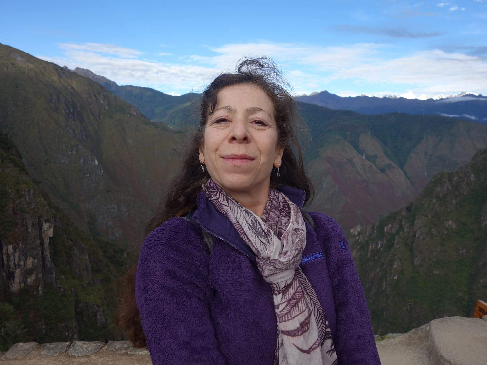

The Shamanic Medicine path embraces and honours the Ancient Wisdom teachings of our Ancestors and the sacred practises and Rites of The Q’ero lineage of Peru. Wendy shares these Ancient teachings, practises and Rites in a safe and supportive environment. She encourages, honest self exploitation, authentic communication and deep honouring of all that we are, in order to restore balance and harmony with in ourselves. For it is only from a balanced state of being we are able to be in compassionate action with “ others” our community and our planet. The Sacred Medicine teachings and practises enable a profound journey of true self discovery to unfold, as the layers of, judgement, identification, and attachment are stripped away. Wendy brings over 30 years of Energy healing experience to her sessions. Her own journey with The Medicine includes Shamanic and Angelic Reiki and an in depth study and experience of the Munay Ki and Medicine Wheel teachings. She also traveled to Peru, where she received Rites and teachings from the Q’ero lineage. She is committed to supporting each individual to align with The Divine Genius within to heal and transform their lives, their relationship with their community and our planet.
